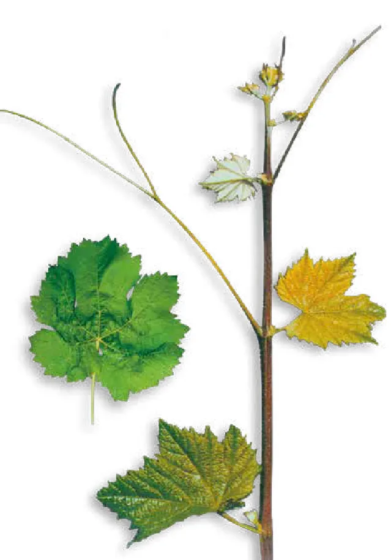

Chapter 3 · The Portuguese grape varieties
Arinto (W)
This grape variety can be found everywhere in Portugal. It has been mentioned in literature for 300 years (Alarte 1721) and is considered one of the noblest white wine varieties. The wine is described (Paulo Laureano) as follows: “Clear lemon yellow, sometimes with mineral notes and medium intensity. Over the course of ageing, it develops an aroma reminiscent of honey, but also of kerosene. One tastes the acid in the mouth, but in a wonderful interplay with fruity tones”
Regional classification:
DOC quality wine: Vinho Verde, Doro, Távora-Varosa, Bairrada, Beira Interior, Óbidos, Alenquer, Arruda, Torres Vedras, Bucelas, Tejo, Pamela, Setúbal, Alentejo subregions: Évora, Moura, Redondo, Reguengos, Vidigueira.
IPR quality wine: Lafões, Encostas d'Aire, Alcobaça, Azores sub-regions.
Regional wine: Minho. Trás-os-Montes, Beira Interior subregions, Estremadura province, Tejo, Terras de Sado, Lisboa, Alentejo, Algarve, Azores.
Morphology:

Young shoot (form of tip): Open with crimson red tip, very dense hairs
Young leaf: Green with copper spots, very dense erect hairs on ventral side,
Young shoot (form of tip): Red stripes on the dorsal side of nodes and internodes, green buds.
Tendrils: Medium length, regular and irregular,
Inflorescence (sex of flower): Hermaphrodite.
Mature leaf: Large, pentagonal, three lobes, Upper side of blade green, regular, medium blistering of upper side of blade, rugose, lower side of blade velvety, with erect hairs of medium density, Short convex teeth, closed V- shaped petiolar sinus.
Bunch: Large, conical, multiple wings, dense. Medium large peduncle.
Berry: Short, eliptic, yellow green, Medium expression of berry skin, soft flesh.
Phenology:
Time of bud burst: Late, 9 days after the Fernão Pires.
Flowering: Medium season, 5 days after the Fernão Pires
Berry (colour change): Late 16 days after the Fernão Pires.
Berry (harvest ripe): Late, two weeks after the Fernão Pires.
Vegetative and viticultural potential:
Vigour of shoot growth: High.
Pruning weight: In warmer zones 1,800–3,000 kg/ha, depending on the clone and the terroir.
Shoot positioning: Upright, heliotropic, some terminal shoots may develop a lateral habit.
Length of internodes: Varies. Some medium to long, others long.
Shoot length: Medium to large, some semi-erect and very long.
Tendency to form lateral shoots: Medium, particularly in the case of longer shoots.
Length of lateral shoots: Some medium to long, other short.
Rate of multiple bud bursts: Very seldom
Bud fertility index: Low on average, 0.8 flowers per shoot. Maximum one bunch per shoot
Bunch size: Large (0–450 g in warm zones; 613–675 g in coastal zones.
Yield: Low yield with traditional standard material; Certified clone achieves high yields (1–15 t/ha),
Yield consistency: Regular but in vineyards with incorrect trellising systems production of canes can compromise yield.
Crop uniformity: Highly Homogeneous behaviour with virus-free certified material.
Winkler Index: 1,229 (average)
Sensitivity to abiotic factors: Sensitive to wind before flowering and to soil with poor water retention.
Susceptibility to fungal diseases: Susceptible any and powdery mildew, Phomopsis vitícola, and bunch rot. Has some resistance to Anthracnose.
Berry skin: Medium.
Vineyard conduction system: Yield increases with arched cane training systems, although the Cordon Royal is common. It is difficult to achieve the correct balance between quality and quantity. This variety has large leaves; pruning is therefore recommended to prevent the foliage from becoming too dense.
Soil requirements: Acid or calcareous soils, deep and moist, but well-drained, and not too dense, with orientation towards the North.
Climatic requirements: Zones inland, or coastal regions with moderate climates.
Vine density: Vine should be spaced 1 m apart, in rows at intervals of 2.5 m.
Irrigation: Sensitive to drought stress. Irrigation therefore recommended in dry and poor soils.
Incidence of coulure/millerandage: Low in respect of coulure, although at medium risk in respect of millerandage.
Spoilage of mature berries: Some blue mould rot, but very little drought damage on the bunch.
Oenological characteristics:
Potential alcohol content: Average in coastal region 11,5 % vol. southern Portugal.

Natural acidity: Quite high; (total acid, 6–9 g/l)
Risk of oxidation: Low
Colour intensity of wine: Lemon yellow; with late harvest, the colouration can become very intense.
Tannins: Monomeric 1.3–1.7 mg/l, oligomeric 1.1–3.7 mg,
Polymeric: 4.3–10.9 mg/L
Total polyphenol index (at 260 nm ): 93–119 mg/L
Aromatic profile: Citrus fruits. Terpenoid compounds 400–500 μg/l (Alentejo); total benzenoids 470–530 μg/l; total norisoprenoídes 250–350 μg/l
Aging potential: High, the wine improves with ageing. Suitable for ageing in barrels Possible appearance of kerosene note similar to Riesling.